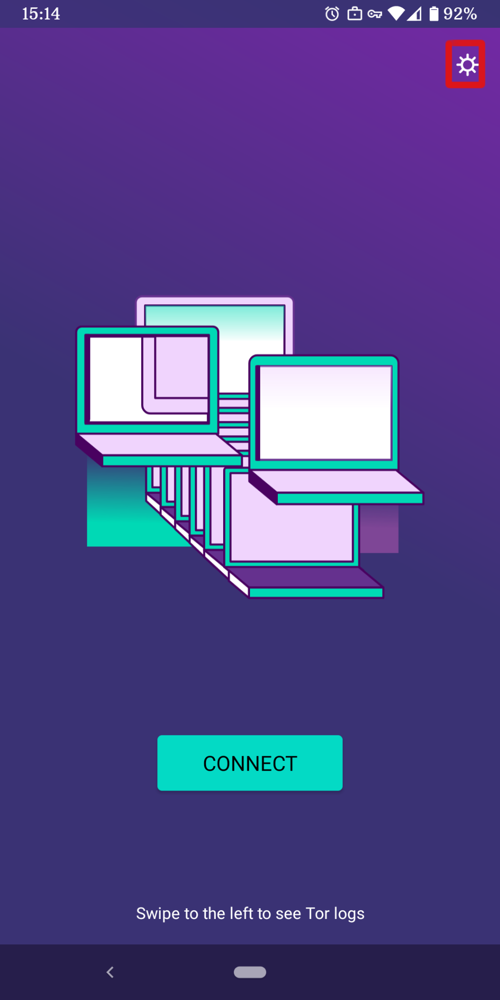
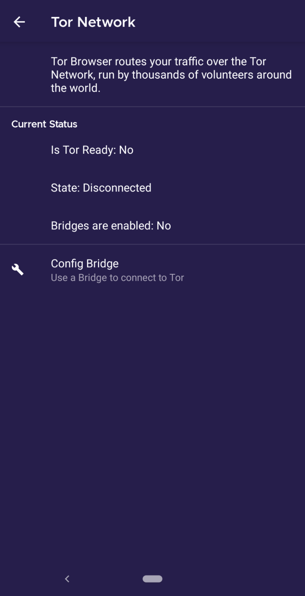
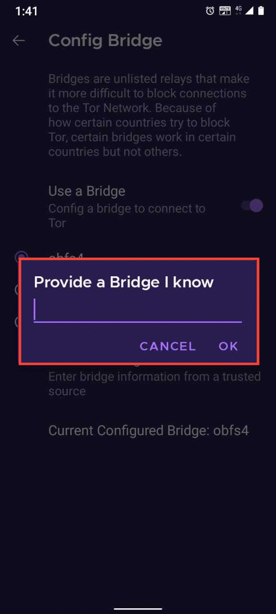
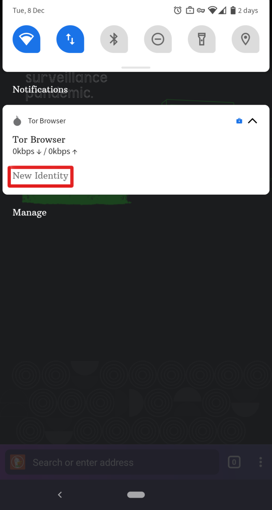
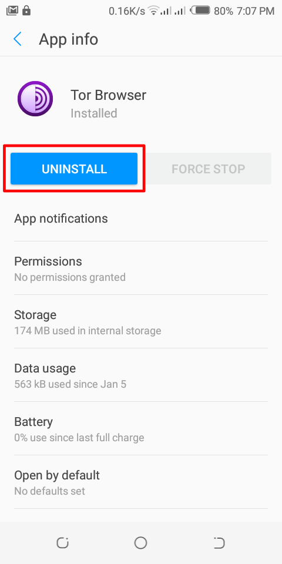

Android için Tor Browser
Android için Tor Browser, Tor Project tarafından geliştirilen ve desteklenen tek resmi mobil tarayıcıdır.
Masaüstü Tor Browser gibidir ancak Android mobil aygıtlarda kullanılır.
Android için Tor Browser uygulamasının öne çıkan bazı özellikleri: web siteleri arasında izlemenin azaltılması, gözetime karşı korunma, web tarayıcı parmak izinin alınmasını engelleme ve sansürü aşmadır.
İNDİRMEK VE KURMAK
Android için Tor Browser uygulaması vardır (alfa).
Teknik olmayan kullanıcılar, kararlı olduğu ve hata çıkma olasılığı daha az olduğu için Android için Tor Browser uygulamasını almalıdır.
Android için Tor Browser, Play Store, F-Droid ve Tor Project web sitesinde bulunabilir.
Tor Browser uygulamasını bu üç platformun dışında bir yerden indirmek çok risklidir.
Google Play
Android için Tor Browser uygulaması Google Play Store üzerinden kurulabilir.
F-Droid
Guardian Project, F-Droid deposında Android için Tor Browser uygulamasını sunuyor.
Uygulamayı F-Droid üzerinden kurmayı yeğlerseniz, lütfen şu adımları izleyin:
F-Droid web sitesinden Android aygıtınıza F-Droid uygulamasını kurun.
F-Droid kurulumu tamamlandığında uygulamayı açın.
Sağ alt köşedeki "Ayarlar" üzerine dokunun.
"My Apps" bölümünden, Repositories üzerine dokunun.
"Guardian Project Official Releases" seçeneğini etkinleştirin.
F-Droid, Guardian Project deposundaki uygulamaların listesini indirir (Not: Bu işlem bir kaç dakika sürebilir).
Sol üst köşedeki geri düğmesine dokunun.
Sağ alt köşedeki "Latest" üzerine dokunun.
Sağ alt köşedeki büyüteçe tıklayarak arama penceresini açın.
"Tor Browser for Android" ifadesini arayın.
"The Tor Project" olarak görünen arama sonucu üzerine dokunup kurun.
Tor Projesi web sitesi
Ayrıca Android için Tor Browser uygulamasını apk dosyasını Tor Projesi web sitesinden indirip kurarak edilnebilirsiniz.
ANDROID İÇİN TOR BROWSER KULLANMAYA BAŞLAMAK
Tor Browser ilk kez çalıştırıldığında, doğrudan Tor ağına bağlanma ya da ayarlar simgesine dokunarak Tor Browser bağlantınızı yapılandırma seçeneği sunulur.
Bağlanma

Çoğu durumda "Bağlan" seçeneğinin seçilmesi, herhangi bir yapılandırma gerekmeden Tor ağına bağlanmanızı sağlar.
Dokunduktan sonra, Tor bağlantısının kurulması ekranın altında değişen cümleler ile görüntülenir.
Hızlı bir bağlantınız olduğu halde bu metin bir noktada takılıp kalıyorsa, yapabileceklerinizi görmek için Sorunları Çözmek sayfasına bakabilirsiniz.
Yapılandırma

Bağlantınızın sansürlendiğini biliyorsanız, ayarlar simgesine dokunmalısınız.
Tor Browser size bir dizi yapılandırma seçeneği sunar.
İlk ekran Tor Ağının durumu hakkında bilgi verir ve bir Köprü yapılandırma seçeneği sunar ('Köprü Yapılandırması').
Bağlantınızın sansürlendiğini biliyorsanız ya da Tor ağı ile bağlantı kurmayı deneyip başarısız olduysanız ve başka hiçbir çözüm işe yaramadıysa, 'Köprü Yapılandırması' üzerine dokunun.
Böylece bir değiştirilebilir taşıyıcı yapılandırabileceğiniz Engellemeyi Aşmak bölümüne yönlendirileceksiniz.
ENGELLEMEYİ AŞMAK
Köprü aktarıcıları, herkesin kullanımına açık olan ve Tor dizininde listelenmeyen Tor aktarıcılarıdır.
Baskıcı rejimler ile yönetilen yerlerde bulunan Tor kullanıcıları ve herkese açık olarak çalışan bir Tor aktarıcısının IP adresine bağlandıklarının görülmesini istemeyen kişiler ek bir güvenlik katmanına sahip olmak için köprüleri kullanabilir.
Bir değiştirilebilir taşıyıcı kullanmak için, Tor Browser uygulaması ilk kez başlatıldığında görüntülenen ayarlar simgesine dokunun.
İlk ekran Tor Ağının durumu hakkında bilgi verir. Bir köprü yapılandırmak için 'Köprü Yapılandırması' üzerine dokunun.

Sonraki bölümde bir iç köprü ya da özel köprü kullanımı seçeneği sunulur.
"Bir köprü kullanılsın" bölümünde "obfs4", "meek-azure" ve "snowflake" olarak üç seçenek bulunur.


"Bildiğim bir köprüyü kullanacağım" seçeneğini kullanırsanız bir köprü adresi yazmanız gerekir.


KİMLİK YÖNETİMİ
Kimliği Yenilemek

Tor Browser çalışırken aygıtınızın bildirim panosunu açtıktan sonra "KİMLİĞİ YENİLE" düğmesini görebilirsiniz.
Bu düğmeye dokunarak yeni bir kimlik alabilirsiniz.
Tor Browser masaüstü sürümünün aksine, Android için Tor Browser üzerindeki "KİMLİĞİ YENİLE" düğmesi, web sitelerinde yapacağınız işlemlerin daha önce diğer web sitelerinde yaptığınız işlemler ile ilişkilendirilme olasılığını yok etmez.
Bu seçenek kullanıldığında yalnız Tor devreniz değiştirilir.
GÜVENLİK AYARLARI

Güvenlik ayarları, kişisel verilerinizin ele geçirilmesi ve anonimliğinizin aşılmasını engellemek için belirli web özelliklerini devre dışı bırakır.
Android için Tor Browser üzerinde, masaüstü sürümündeki üç güvenlik düzeyi aynı şekilde kullanılabilir.
Güvenlik düzeyini şu adımları izleyerek değiştirebilirsiniz:
- Adres çubuğundaki 3 dikey nokta düğmesine dokunun.
- Aşağı kaydırarak "Güvenlik Ayarları" üzerine dokunun.
- Şimdi güvenlik düzeyini Standart, Daha Güvenli ya da En Güvenli olarak seçebilirsiniz.
GÜNCELLEMEK
Tor Browser her zaman güncel tutulmalıdır. Uygulamanın eski bir sürümünü kullanmaya devam ederseniz, kişisel verileriniz gizliliğini ve anonim olarak kalmanızı tehlikeye atan ciddi güvenlik açıklarına karşı korumasız kalabilirsiniz.
Tor Browser uygulamasını otomatik olarak ya da el ile güncelleyebilirsiniz.
Android için Tor Browser uygulamasını otomatik olarak güncellemek
Bu yöntem mobil aygıtınızda Google Play ya da F-Droid kurulu olduğunu varsayar.
Google Play

Arama çubuğunun yanındaki hamburger menüsüne dokunun ve "Uygulamalarım ve Oyunlarım" > "Güncellemeler" bölümüne gidin.
Güncellenmesi gereken uygulamalar listesinde Tor Browser görünüyorsa seçip "Güncelle" düğmesine dokunun.
F-Droid

"Ayarlar" ve "Kurulu uygulamaları yönet" üzerinde dokunun.
Sonraki sayfada Tor Browser uygulamasını seçip "Güncelle" üzerine dokunun.
Android için Tor Browser uygulamasını el ile güncellemek
Tor Projesi web sitesine giderek son Tor Browser sürümünü indirin. Ardından önceki gibi kurun.
Çoğu durumda son Tor Browser sürümü önceki sürümün üzerine yazılarak tarayıcı günceller.
Bu işlem tarayıcıyı güncellemezse, Tor Browser uygulamasını kaldırıp yeniden kurmanız gerekebilir.
Tor Browser kapalıyken, aygıtınızın ayarlar bölümünden kaldırarak sisteminizden silin.
Mobil aygıtınızın markasına bağlı olarak Ayarlar > Uygulamalar bölümüne gidin. Tor Browser uygulamasını seçerek "Kaldır" üzerine dokunun. Ardından Tor Browser uygulamasını kurun.
KALDIRMA
Android için Tor Browser doğrudan F-Droid, Google Play ya da mobil aygıtınızın uygulama ayarlarından kaldırılabilir.
Google Play

Arama çubuğunun yanındaki hamburger menüsüne dokunup "Uygulamalarım ve Oyunlarım" > "Kurulmuş" bölümüne gidin.
Kurulu uygulamalar listesinden Tor Browser uygulamasını seçip "Kaldır" üzerine dokunun.
F-Droid

"Ayarlar" ve "Kurulu uygulamaları yönet" üzerinde dokunun.
Sonraki sayfada Tor Browser uygulamasını seçip "Kaldır" üzerine dokunun.
Mobil aygıt uygulama ayarları

Mobil aygıtınızın markasına bağlı olarak Ayarlar > Uygulamalar bölümüne gidin. Tor Browser uygulamasını seçerek "Kaldır" üzerine dokunun.
SORUNLARI ÇÖZMEK
Tor günlüklerine bakmak

Tor günlüklerine bakmak için:
- Android için Tor Browser uygulamasını başlatıp 'Bağlan' üzerine dokunun.
- Bağlantı kurulurken, günlük kayıtlarını görüntülemek için sağdan sola kaydırın. (Not: Varsayılan olarak, Android için Tor Browser uygulamasında, Tor günlüklerinin ekran görüntüsünü alma özelliği devre dışı bırakılmıştır. Hata #40191)
Sık karşılaşılan sorunlar ve çözümleri için hakkında ayrıntılı bilgi almak için Destek web sitesine bakabilirsiniz.
BİLİNEN SORUNLAR
Şu anda, Android için Tor Browser üzerinde bulunmayan ancak şu anda masaüstü Tor Browser uygulamasında kullanılabilen bazı özellikler var.
- Tor devrenizi göremezsiniz. #25764
- Android için Tor Browser SD Kart üzerine taşındığında bağlantı kurmuyor. #31814
- Android için Tor Browser kullanılırken ekran görüntüleri alınamıyor. #27987
- Android için Tor Browser kullanılırken dosya yüklenemiyor. #40283
- İstemci kimlik doğrulaması gereken onion adresleri açılamıyor #31672
Mobil aygıtlar üzerinde Tor ile ilgili diğer bilgiler
Orfox
Orfox ilk kez 2015 yılında Guardian Project tarafından, Android kullanıcılarına Tor kullanarak İnternet üzerinde gezime olanağı sağlamak amacıyla yayınlandı.
Orfox sonraki üç yıl boyunca sürekli olarak gelişti ve İnternet üzerinde standart tarayıcılardan daha fazla gizlilik sağlayarak gezinmenin yaygın kullanılan bir yolu oldu. Orfox, insanların sansürü aşmasına ve engellenen siteler ile kritik kaynaklara erişmesine yardımcı olmakta çok önemliydi.
2019 yılında, Android için Tor Browser yayınlandığında Orfox kullanımdan kaldırıldı.
Orbot
Orbot, diğer uygulamaların Tor ağını kullanmasını sağlayan ücretsiz bir vekil sunucu uygulamasıdır.
Orbot, İnternet trafiğinizi şifrelemek için Tor ağını kullanır.
Ardından, sansürü aşmak ve izlemeden korunmak için mobil aygıtınızda kurulu olan diğer uygulamalarla birlikte kullanabilirsiniz.
Orbot Google Play üzerinden indirilip kurulabilir.
Android için Tor Browser ve Orbot hakkında ayrıntılı bilgi almak için destek sitemize bakabilirsiniz.
iOS için Tor Browser
iOS için bir Tor Browser sürümü yoktur.
Onion Browser adındaki iOS uygulamasını öneririz. Bu uygulama açık kaynaklıdır, Tor aktarımlarını kullanır ve Tor Projesi ile yakın çalışan bir kişi tarafından geliştirilmektedir.
Bununla birlikte Apple, iOS üzerindeki web tarayıcılarının Webkit adında bir şey kullanmasını zorunlu kılmaktadır. Bu durum Onion Browser uygulamasının Tor Browser ile aynı düzeyde kişisel gizlilik koruması sağlamasını engeller.
Onion Browser hakkında ayrıntılı bilgi alın.
Onion Browser uygulamasını App Store üzerinden indirebilirsiniz.
Windows Phone için Tor Browser
Şu anda eski Windows telefonlarda Tor Browser çalıştırmak için desteklenen bir yöntem yok. Ancak daha yeni Microsoft markalı ya da destekli telefonlar için şu adımlar uygulanabilir: Tor Browser for Android.